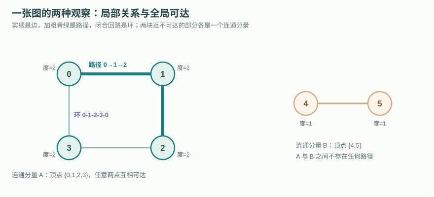
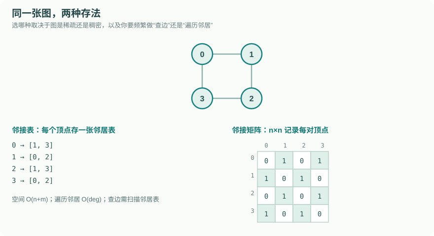
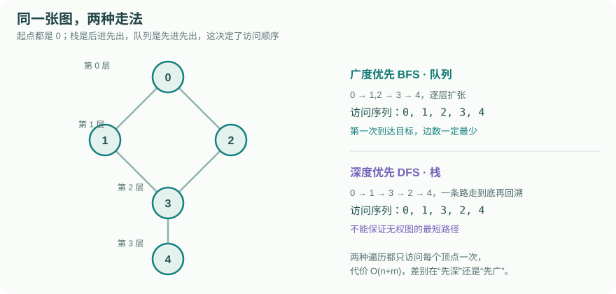

图基础：用顶点和边描述任意关系
数组描述顺序，树描述层次，而图描述任意关系：谁认识谁、哪条路通向哪条路。只要搞清顶点、边和方向这几件事，DFS 与 BFS 就能把整个网络走一遍。
为什么需要图：关系不是线性的
前面几章的结构各有形状：数组是一排槽位，链表靠指针连成线，树是一层层向下分叉。它们都在回答“谁在谁旁边、谁是谁的上级”。但现实里大量关系并不服从这两种形状：社交网络里 A 认识 B、B 也认识 C，彼此却没有上下级；地图上一个路口能通向好几个方向，又可能绕回原点。
把这类对象抽象成顶点（vertex），把关系抽象成边（edge），得到的结构就是图（graph），记作 G = (V, E)。树其实是图的一个特例（连通的、无环的图），链表又是树的特例——所以学会图，前面的结构都能看成它的约束版本。
代价也随之而来：图可以有环、可以不连通、边还可能有方向和权重。本章先建立描述图的词汇，再给出两种存储方式和两种遍历方法。
顶点、边与几个关键术语
图的词汇都在描述“边能表达多少信息”。方向、权重、度，分别回答三个不同的问题：
- 有向图：边分为 u→v 和 v→u 两条不同的边。Twitter 的“关注”是有向的：你关注对方，对方不一定关注你。
- 无向图：边没有方向，(u, v) 与 (v, u) 是同一条。微信好友是双向的，一旦同意，双方都能看到对方。
- 带权图：每条边附带一个数值（cost / length）。地图里这个值可以是距离、通行时间或过路费。
- 度：无向图中顶点相邻边的条数；有向图里拆成入度（指向它的边）和出度（从它出发的边）。
路径是一串首尾相接的边；顶点不重复的路径叫简单路径。起点和终点重合的路径叫环。不含环的有向图叫有向无环图（DAG），第 13 章的拓扑排序正需要它。

两种存储：邻接表与邻接矩阵
图本身是对关系的抽象，落到代码里要选一种表示。最常用的两种是邻接表和邻接矩阵；它们维同一张图，却把代价花在不同的地方。
邻接表为每个顶点维护一张邻居表。它只存实际存在的边，所以空间与 n + m 成正比（m 是边数），稀疏图里非常省；遍历一个顶点的邻居只需 O(度)，但查“u 与 v 之间有没有边”要扫描 u 的邻居表。
graph = {0: [1, 3], 1: [0, 2], 2: [1, 3], 3: [0, 2]} # 图 1 左侧那个四点环
def neighbors(g, u):
return g[u] # O(度)
def has_edge_list(g, u, v):
return v in g[u] # 最坏 O(度)
# 带权图：邻居表里存 (终点, 权重)
weighted = {0: [(1, 4), (2, 2)], 1: [(2, 1)], 2: []}邻接矩阵用一个 n×n 数组记录每一对顶点之间是否有边（或边的权重）。查任意一条边是 O(1)，但不管图多稀疏都要占 n² 个槽位，遍历某点的邻居也得扫整行 O(n)。

| 特性 | 邻接表 | 邻接矩阵 |
|---|---|---|
| 空间 | O(n + m) | O(n²) |
| 查边 (u, v) | O(度(u)) | O(1) |
| 遍历邻居 | O(度(u)) | O(n) |
| 适合 | 稀疏图，m ≪ n² | 稠密图，且需频繁查边 |
工程与面试中邻接表是默认选择，因为绝大多数真实图是稀疏的；只有 Floyd-Warshall 这类需要反复 O(1) 查边的算法才优先用矩阵（见第 13 章）。下面代码只用标准库就能建出邻接表：
def build_adjacency(edges, directed=False):
graph = {}
for u, v in edges:
graph.setdefault(u, [])
graph.setdefault(v, [])
graph[u].append(v)
if not directed: # 无向图两个方向都记
graph[v].append(u)
return graphDFS 与 BFS：一条路走到底，还是层层推进
图的遍历和树的遍历目标一样：从起点出发，不重不漏地访问所有可达顶点。与树不同的是，图有环、也可能不连通，所以必须用一个已访问集合防止兜圈。两种经典策略只差在“下一个访问谁”：
- 深度优先（DFS）用栈（或递归调用栈）：总是先扎入最新发现的邻居，走不动了再回溯。
- 广度优先（BFS）用队列：先把当前顶点的所有邻居都看一眼，再逐层向外。

from collections import deque
def bfs_order(graph, start):
seen = {start}; order = []; queue = deque([start])
while queue:
node = queue.popleft() # 先入先出
order.append(node)
for nxt in graph[node]:
if nxt not in seen:
seen.add(nxt); queue.append(nxt)
return order
def dfs_order(graph, start):
seen = set(); order = []; stack = [start]
while stack:
node = stack.pop() # 后入先出
if node in seen: continue
seen.add(node); order.append(node)
for nxt in reversed(graph[node]):
if nxt not in seen: stack.append(nxt)
return order为什么 BFS 能求无权图的最短路径？因为它先访问距离为 1 的所有顶点，再访问距离为 2 的，依次类推。目标第一次被发现时，走过的边数一定最少。把 seen 换成 dist 记录层数即可：
def bfs_distances(graph, start):
dist = {start: 0}; queue = deque([start])
while queue:
node = queue.popleft()
for nxt in graph[node]:
if nxt not in dist:
dist[nxt] = dist[node] + 1 # 第一次发现即最短层数
queue.append(nxt)
return dist两种遍历都只把每个顶点和每条边处理一次，时间同是 O(n + m)。它们真正的差别在空间与用途：DFS 的栈深取决于最长分支，递归实现遇大图可能爆栈；BFS 的队列可能装下最宽的一层，但在无权图上能直接给出最短距离。
逐步观察 BFS 的分层
固定图：0–1、0–2、1–3、2–3、3–4。拖动滑块查看 BFS 每一层如何扩张。
连通分量与有向环检测
图不一定“整块”地连在一起。无向图里互相可达的最大顶点子集叫一个连通分量；统计分量数只需对每个未访问顶点发起一次遍历：
def connected_components(graph):
seen = set(); components = []
for start in graph:
if start in seen: continue
block = set(); stack = [start]
while stack:
node = stack.pop()
if node in block: continue
block.add(node); seen.add(node)
stack.extend(graph[node])
components.append(block) # 每个分量是一块互相可达的点
return components有向图里连通性要更严格：它不保证 u 到 v 可达时 v 也到得了 u，互相可达的子图叫强连通分量。一个常见任务是检测有向环，用三色标记实现：白色=未访问，灰色=在当前 DFS 路径上，黑色=已处理完。一旦在 DFS 中遇灰色节点，说明有一条路径绕回了自己：
WHITE, GRAY, BLACK = 0, 1, 2
def has_cycle_directed(graph):
colour = {node: WHITE for node in graph}
def visit(node):
colour[node] = GRAY
for nxt in graph.get(node, []):
if colour[nxt] == GRAY: # 绕回了当前路径
return True
if colour[nxt] == WHITE and visit(nxt):
return True
colour[node] = BLACK # 子树处理完毕
return False
return any(colour[n] == WHITE and visit(n) for n in graph)把网格看成图：岛屿数量
很多看似不是图的问题其实能建模成图。给定一个只包含 '1'（陆地）和 '0'（水）的二维网格，相连的陆地上下左右相邻，求岛屿个数——这就是求连通分量个数。把每个陆地格子看作顶点，相邻的陆地格之间连一条无踪边，岛屿数就是分量数。
def num_islands(grid):
if not grid: return 0
rows, cols = len(grid), len(grid[0])
def sink(r, c):
if r < 0 or r >= rows or c < 0 or c >= cols or grid[r][c] != '1':
return
grid[r][c] = '0' # 标记已访问，相当于浅岛
sink(r - 1, c); sink(r + 1, c)
sink(r, c - 1); sink(r, c + 1)
count = 0
for r in range(rows):
for c in range(cols):
if grid[r][c] == '1':
count += 1
sink(r, c)
return count这个写法会修改输入网格（把整岛“浅”成水）。如果不允许改变输入，就把已访问格子记到单独的 set 里，而不改写 grid。
适用边界与常见误区
- “图就是树加了几条边”：树是特殊的图，但图可以有环、可以不连通，树的“任意两点唯一路径”等结论不再普遍成立。
- “邻接矩阵总是更好”：矩阵查边是 O(1)，但无论多稀疏都要 n² 空间；稀疏图用邻接表才划算。
- “DFS 递归写起来简单，随便用”：递归深度等于最长路径，顶点上万时可能触发 Python 默认递归限制。大图优先用显式栈或 BFS。
- “遍历完了图就都访问到了”：单次遍历只能覆盖起点所在的连通分量；要遍历全图，必须对每个未访问顶点重新发起遍历。
- “无向图能到就一定能回”不能搬到有向图：有向图要区分可达与互达，即连通与强连通。
复杂度上，DFS 与 BFS 都是 O(n + m)（邻接表），因为每个顶点入一次、每条边被看一次；用邻接矩阵则是 O(n²)。这些结论都建立在“遍历邻居”这一操作上，而不是具体的递归写法。
带走三个判断准则
- 图把“关系”提升为一等公民：顶点存对象，边存关系，方向、权重、度都在描述边能承载多少信息。
- 邻接表与邻接矩阵不是对错，而是空间 O(n+m) 与查询 O(1) 的权衡；稀疏图默认用邻接表。
- DFS 和 BFS 同是 O(n+m)，差别在“先深”还是“先广”；无权图的最短路需 BFS，因为它第一次发现即最少边数。
继续学习与校验资料
- MIT 6.006：Breadth-First Search — BFS 分层与无权最短路径
- Python collections.deque — BFS 队列的标准库实现，两端操作都是 O(1)
- 下一章：图算法 — 最短路径、拓扑排序与最小生成树
- 上一章：堆与优先队列 — 图算法里优先队列的用武之地